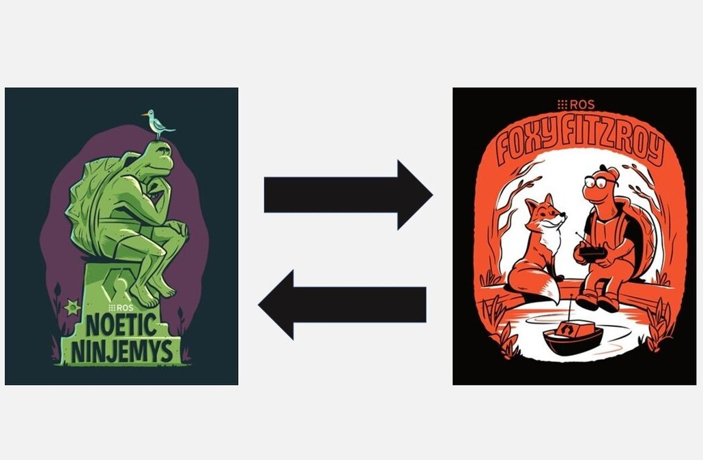

Transitioning from ROS 1 to ROS 2: Enhancements and Practical Insights
The evolution of the Robot Operating System (ROS) from version 1 to ROS 2 has brought significant improvements to robotics development. While ROS 1 has been a fundamental tool in robotics research and industry applications, it lacked scalability, security, and real-time capabilities. ROS 2 addresses these limitations and provides a more robust framework for modern robotics.
"ROS 2 is not just an upgrade; it’s a transformation that makes robots smarter, safer, and more efficient in dynamic environments."
One of the key improvements in ROS 2 is its support for real-time processing. With the integration of DDS (Data Distribution Service), ROS 2 ensures better communication between robotic components, making it ideal for industrial and autonomous robotic systems. Additionally, ROS 2 introduces improved security features such as authentication and encryption, addressing vulnerabilities found in ROS 1.
Migrating from ROS 1 to ROS 2 can be challenging, as it requires adapting existing codebases and understanding new communication mechanisms. However, tools like the ROS 1-Bridge facilitate a smoother transition. As more robotics applications shift towards ROS 2, developers must stay updated and embrace the new architecture to enhance robotic performance and reliability.